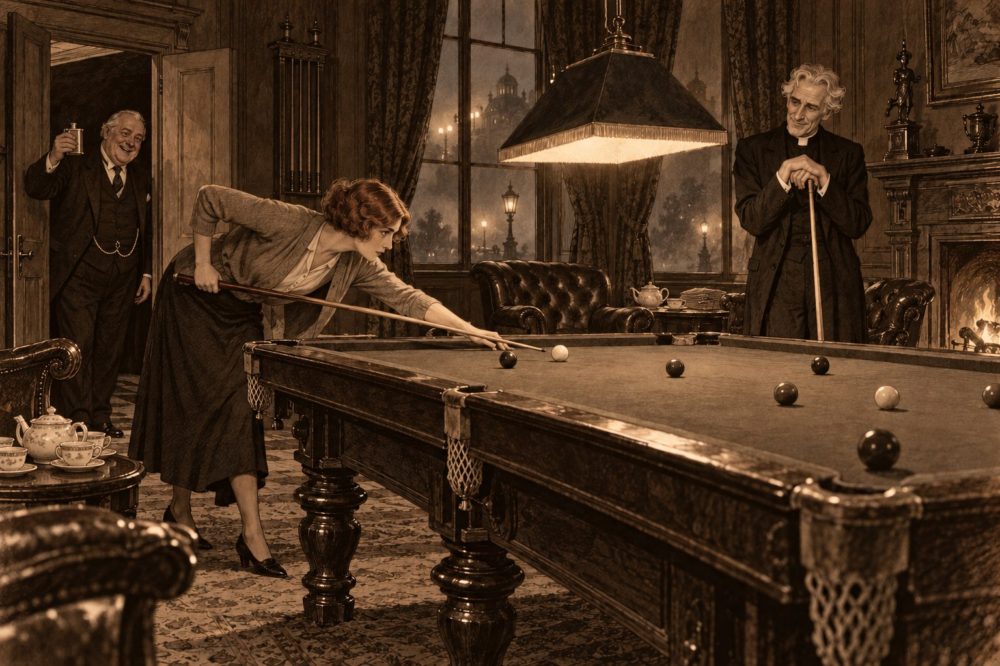

Одиннадцать дней

Среда, 1 декабря. Прибыл. Сустав большого пальца правой стопы воспалён; обувь — войлочная туфля.
Назначено: серная вода крепкая, два стакана натощак. Ванны — по усмотрению врача. Портвейн — нет.
Есть люди, которых Провидение наказывает за грехи, и есть люди, которых наказывает подагра. Преподобный Эмброуз Морс, викарий Сент-Гатлака, давно знал, что принадлежит ко вторым, и находил в этом своё утешение. Совесть, приходя ночью, всегда делает вид, будто печётся о вашем благе; подагра ничего такого вида не делает. Она садится на большой палец правой ноги, как кредитор на крыльцо, и требует платы за всё, что было выпито в «Плуге» за тридцать лет, — честно, по счёту и без проповедей.
— Харрогейт, — сказал доктор Окли, разглядывая палец так, словно это был чужой и не слишком симпатичный ему человек. — Три недели. И непременно в декабре.
— Почему в декабре?
— Потому что зимой ванны и номера там дешевле, а ваш приход, простите, не Кентербери. И потому что в декабре в Харрогейте нечего делать, кроме как лечиться.
Агнес уложила ему чемодан и поверх рубашек положила лист, исписанный её твёрдым почерком. Викарий прочёл его в поезде. Лист начинался словами «Тебе нельзя», а дальше говорилось о портвейне, пиве, дичи, почках, анчоусах, спорах с врачами и привычке засиживаться за полночь. Последняя строчка была такая: «И не ищи там убийц. Ты едешь лечить ногу». Викарий сложил лист вчетверо и спрятал в бумажник — туда, где люди держат то, что действительно намерены соблюдать.
Харрогейт, город на севере, в Йоркшире, стоит на источниках, которые пахнут так, будто сама земля в этом месте давно и тяжело хворает. Сюда сто лет ездили лечить то, что нажили за столом: подагру, печень, ревматизм и скуку. Город выстроен для того, чтобы болеть с удобствами. В нём широкие улицы и пологие подъёмы, посреди него лежит огромный зелёный луг, который здесь зовут Стрэем, крытые ванны похожи на банк, а павильон над старым серным колодцем — на маленькую часовню. В декабре 1926 года всё это стояло в тумане. Туман был не лондонский, жёлтый и злой, а северный, белый и терпеливый; он лежал на Стрэе, как вата в шкатулке, и фонари в нём казались не огнями, а воспоминаниями об огнях.
Гостиница, где поселился викарий, называлась «Харрогейт Гидро», а попросту «Гидро». Так здесь именовали гидропатические отели, то есть гостиницы и лечебницы сразу: со своим врачом, своими ваннами, турецкой баней и распорядком, который висел в холле в рамке, как расписание поездов. Дом был большой, викторианский, с обеденным залом под стеклянной крышей и зимним садом, где по вечерам играл маленький оркестр. В номере горел угольный камин, у окна стоял умывальник с горячей водой, а за окном не было ничего, кроме тумана.
За первым ужином викарий спросил к сыру портвейна.
— Портвейна у нас не подают, сэр, — ответил официант с той вежливостью, с какой сообщают о кончине дальнего родственника. — И ничего другого тоже. Отель трезвый.
— Трезвый? — переспросил викарий.
— С самого открытия, сэр. Так у нас заведено.
Викарий знал, что в Англии есть гостиницы для трезвенников — по-английски их называют «темперанс», то есть «воздержание», — но представлял их себе где-нибудь при методистской часовне, с портретом основателя общества над буфетом и с лимонадом в графинах. Ему не приходило в голову, что в такой гостинице могут быть зимний сад, стеклянная крыша и оркестр. Он подумал, что этот дом постится почти полвека, то есть почти столько, сколько он сам пьёт, и что в Англии, по-видимому, есть дома, которые держат пост дольше, чем иные люди держат слово. Потом он попросил воды. Вода оказалась вкусной, и это было хуже всего.
⁂
Четверг, 2 декабря. Серная вода крепкая — два стакана, с прогулкой между ними.
Ванна солёно-серная, слабая. Действие вод — удовлетворительное. Портвейн — нет.
Наутро, в семь часов, викарий в войлочной туфле на правой ноге и в башмаке на левой спустился по Кресент-роуд к Королевскому бювету. Это был восьмиугольный павильон над Старым серным колодцем, со стеклянной пристройкой, в которой было теплее, чем на улице, и пахло сильнее. За длинной деревянной стойкой стояла миссис Хинчклифф — полная, в белом переднике, с руками прачки и лицом доброй тётки, которая знает про вас всё и ничего не скажет вашей жене. Она наливала воду из крана в стаканы, и стаканы на стойке стояли рядами, как солдаты, которых послали на верную смерть. В углу трое музыкантов играли что-то бодрое и громкое — по-видимому, для того, чтобы пациенты не так сильно замечали, что пьют.
Викарий отпил. Вода пахла так, как пахнет в курятнике, где кто-то давно разбил яйцо и забыл о нём; на вкус она была такой же, только тёплой.
— Второй стакан через двадцать минут, сэр, — сказала миссис Хинчклифф. — А между ними пройдитесь. Все ходят.
Все действительно ходили. Пожилые господа в пальто с бархатными воротниками и пожилые дамы в мехах медленно двигались по кругу вдоль стен, держа стаканы перед собой, как держат свечу на крестном ходу, и время от времени отпивали с выражением тихого мученичества. Викарий пристроился к этой процессии и подумал, что никогда ещё не видел столько людей, кающихся в одном и том же грехе в одно и то же время.
Дверь распахнулась, впустив туман, и в павильон въехало кресло-коляска. Такие кресла называли «батскими», по курортному городу Бату, где их когда-то придумали: три колеса, кожаный верх, как у детской коляски, и длинная ручка спереди. Их возили по городу за плату нанятые люди, и стояли они рядами на нескольких стоянках — у Кресент-роуд и у Стрэя, — как кэбы. Это кресло вёз сухой жилистый старик в армейской шинели, перешитой под гражданское пальто, а в кресле, под клетчатым пледом, сидел человек, которому оно было тесно в бёдрах.
Он был грузен, красен и чисто выбрит, с тяжёлыми щеками, лежавшими на воротнике, как мешки с шерстью на возу, и с толстой золотой цепочкой поперёк жилета. Глаза у него были маленькие, весёлые и очень цепкие. Такие люди обычно наживали первые деньги ещё до бурской войны и до сих пор пересчитывают их лично. Рядом с креслом шла худая женщина в сером пальто и несла второй плед, сложенный вчетверо.
— Мой стакан, миссис Хинчклифф! — закричал человек в кресле ещё от дверей. — Один! Доктор велел два, а я велю один, и посмотрим, кто из нас тут хозяин.
— Вам, мистер Эйнсуорт, всегда одного мало и всегда двух много, — сказала миссис Хинчклифф и подала стакан.
Он выпил его разом, как пьют за упокой человека, которого не любили, сморщился, крякнул и отдал стакан старику в шинели. Потом заметил викария.
— Пастор! — сказал он так, будто нашёл в кармане забытую монету. — По воротничку видно. Что, и вас достала? Нога?
— Нога, — признался викарий.
— Правая?
— Правая.
— А у меня обе, — сказал человек с гордостью, с какой другие говорят о двух сыновьях в гвардии. — Эйнсуорт. Брадфорд. Шерсть. А это моя жена. Она здорова, она тут для компании.
Миссис Эйнсуорт улыбнулась викарию маленькой вежливой улыбкой, какой улыбаются люди, давно привыкшие, что их представляют в последнюю очередь и в одну строчку. У неё было тонкое лицо, рано поседевшие волосы и очень усталые глаза. Викарий прислушался к её «очень приятно» и не услышал ничего, кроме усталости. Старик в шинели молча поправил на хозяине плед и встал за креслом, как ставят часового. Это был Джош Кроссли, возчик кресла; викарий скоро узнал, что Кроссли возит мистера Эйнсуорта каждое утро вот уже вторую неделю и что во всём Харрогейте нет человека, который знал бы больше о том, кто сколько пьёт стаканов и кто сколько из них выливает в кадку с пальмой.
⁂
Пятница, 3 декабря. Серная вода — два стакана. Массажный душ Экс, двадцать минут.
Боль ночью меньше. Пациент раздражителен. Портвейн — нет.
В пятницу вечером викарий сидел в зимнем саду под стеклянным потолком, который туман снаружи затянул молоком, и слушал оркестр. Оркестр играл фокстроты для тех, кто ещё мог танцевать, а для тех, кто уже не мог, — вальсы, медленные, как выздоровление. Нога лежала на скамеечке. Викарий думал о том, что вода из-под крана в «Гидро» действительно очень хороша, и о том, что это ничуть не утешает.
— Падре! — позвали его из-за пальмы. — Идите сюда. Тут у нас своя епархия.
Мистер Эйнсуорт сидел в плетёном кресле, вытянув обе ноги в войлочных туфлях, и миссис Эйнсуорт вязала рядом. Когда викарий, хромая, подошёл, Эйнсуорт подмигнул ему и вынул из внутреннего кармана плоскую серебряную фляжку.
— Бренди, — сказал он, понизив голос ровно настолько, чтобы его слышали только за ближайшими тремя столиками. — Отель трезвый, а я нет. Полвека они тут постятся, а я плачу им как за лондонскую гостиницу за то, чтобы на это смотреть. Один глоток, падре. За подагру.
Викарий вспомнил лист в бумажнике. Агнес упомянула портвейн, пиво, дичь, почки и анчоусов, но ни слова не написала о бренди. Это было упущение, и упущение не его. Он взял фляжку, сделал один маленький глоток и вернул её с поклоном, с каким возвращают чужую Библию.
— Вот и славно, — сказал Эйнсуорт. — А то сидите, как на поминках. Вы откуда?
— Из Линкольншира. С краю Фенов.
— Фены, — повторил Эйнсуорт с уважением человека, для которого любая земля прежде всего имеет цену. — Плоско и мокро. А я, падре, два года назад купил дом под Нэрсборо, в трёх милях отсюда. Уинтерсгилл-Холл. Не слыхали? В Нэрсборо все слыхали. Дом с дурной славой. — Он сказал это с такой нежностью, с какой говорят о породистой лошади. — В нём, видите ли, не держатся хозяева. Двести лет держались одни Хейлы, а потом — ну, вы понимаете, — пошли разговоры: будто по ночам там кто-то ходит по галерее, будто вода в колодце во дворе к беде краснеет, будто последний, кто купит дом, в нём и умрёт. Старуха Хейл, вдова, наслушалась, испугалась и продала за полцены. Дурная слава, падре, — самый дешёвый товар на свете. Покупаешь его задаром, а когда выветрится, продаёшь по полной цене. Лучшая сделка в моей жизни.
— Ральф, — сказала миссис Эйнсуорт, не поднимая глаз от вязанья.
— Жена считает, что там дует, — сказал Эйнсуорт и захохотал. — Там и вправду дует. Дом старый.
— Там очень тихо, — сказала миссис Эйнсуорт. — В нём слышно, как идут часы во всех комнатах сразу.
Викарий слушал обоих. В «пошли разговоры» у Эйнсуорта ему послышалось что-то вроде подмигивания — так подмигивает голос человека, который рассказывает анекдот и сам знает, чем он кончится. Но сделку свою Эйнсуорт совершенно искренне считал лучшей в жизни, а миссис Эйнсуорт совершенно искренне слышала по ночам все часы в доме. Викарий подумал, что труднее всего судить тех, кому просто не приходит в голову, что тут есть чего стыдиться.
⁂
Суббота, 4 декабря. Серная вода — два стакана. Паровая ванна для стопы.
Опухоль спадает. Ходить больше. Портвейн — нет.
В субботу, 4 декабря, туман стал ещё гуще, и к вечеру в холле зажгли все лампы. Викарий сидел у камина с газетой, положив ногу на скамеечку, и не читал, а слушал, как холл пробует на вкус каждый новый звук: дверь, шаги, звонок колокольчика. Около семи у подъезда остановилось такси, и в холл вошла дама.
Она была высокая для женщины, ростом почти с иного мужчину, в пальто, в маленькой фетровой шляпе, и несла в руке один небольшой чемоданчик — не больше того, с каким ходят к портнихе. Сняв у стойки шляпу, она провела рукой по волосам. Волосы у неё были рыжевато-каштановые и подстрижены коротко, по моде; горничная потом объяснила викарию, что такая стрижка называется «фокстрот», как танец, и что в Лондоне теперь так стригутся все приличные дамы, а в Харрогейте одни приезжие.
— Одноместный, мадам? — спросил портье. — Надолго ли?
— Я ещё не знаю, — сказала дама. — Может быть, надолго.
— А ваш багаж?
— Идёт следом, — сказала она. — Я только что из Южной Африки. Из Кейптауна.
Она взяла перо и что-то написала в книге приезжих, не торопясь, ровным почерком.
Викарий слышал на своём веку великое множество лжи. Он знал ложь вора, которая всегда немного громче правды, и ложь должника, которая всегда немного ласковей. Знал ложь мужа, которая звучит устало, и ложь ребёнка, которая звучит так, будто ребёнок сам себе удивляется. Эту он не знал. В ней не было расчёта: дама ничего не хотела выгадать у портье. Не было в ней и страха: она не оглянулась ни разу. Она произнесла «Кейптаун» так, как ставят чашку на блюдце, — аккуратно, чтобы не звякнуло. Викарий слышал, что это неправда, так же ясно, как слышал фальшь в псалме, — и не слышал в этой неправде ни одного из тех намерений, по которым всю жизнь узнавал ложь. Он не знал, как это назвать, и впервые в жизни не знал, кому это может повредить.
Он поднял газету повыше и решил, что это не его дело. Это было первое решение, которое он принял в Харрогейте, и самое лёгкое; остальные дались ему труднее.
⁂
Воскресенье, 5 декабря. Серная вода — один стакан. Процедур нет. Отдых.
Пациент был в церкви и, судя по ноге, стоял на коленях. Не следовало. Портвейн — нет.
В воскресенье вечером в большой гостиной «Гидро» кто-то сел за рояль, и разговоры в креслах стали понемногу стихать, как стихает ветер к ночи. Играла миссис Нил. Она играла хорошо — не так, как играют барышни, которых учили для гостей, а так, как играют для себя, когда думают, что никто не слушает. Потом она запела. Голос у неё был небольшой и чистый, и пела она старые песни, которые викарий слышал в детстве, когда мать пела их над шитьём. В дальнем углу сидел седой господин с большими руками, о котором в отеле говорили, что он русский и музыкант; он слушал, закрыв глаза, а когда она кончила, сказал что-то по-французски, и она ответила ему по-французски же, и они заговорили о музыке так, как говорят двое, нашедшие общий язык в чужой стране.
Викарий подумал, что она поёт без единой фальшивой ноты. Он поймал себя на том, что прислушивается нарочно, как прислушивался к ней в первый вечер у стойки портье, — и что фальши нет. Неправда в ней была одна, и сидела она в одном слове, в «Кейптауне». Всё остальное, что она говорила и пела, было правдой.
⁂
Понедельник, 6 декабря. Серная вода крепкая — два стакана. Солёно-серная ванна, крепче.
Пациент ходит без палки, но с кием. Портвейн — нет.
В понедельник за завтраком к столу Эйнсуортов подсел новый постоялец. Мистер Чарльз Уитби из Бата был худ, тих и вежлив, с короткими седеющими усами и тем жёлто-коричневым загаром, который приобретают не на английском море, а под таким солнцем, после которого английская зима кажется не холодом, а сумерками. Он ходил с палкой и немного прихрамывал на левую ногу. Викарию он сказал, что приехал «подышать», и это было так же странно, как приехать в Харрогейт за свежим воздухом в декабре, но викарий слышал и не такое. Уитби всё больше молчал, говорил с миссис Эйнсуорт о погоде, а с мистером Эйнсуортом — о шерсти, и о шерсти, к удивлению викария, знал немало.
— Вы ведь бывали в наших краях, мистер Уитби? — спросил Эйнсуорт. — Под Нэрсборо?
— Никогда, — сказал Уитби.
Викарий в эту минуту намазывал масло на гренок и так и остановился с ножом в руке. Это была первая настоящая фальшь, которую он услышал в Харрогейте. Она была твёрдая и тяжёлая, как камень, который кладут на крышку, чтобы она не поднялась. Уитби не смотрел ни на кого, а Эйнсуорт уже рассказывал про колодец, который к беде краснеет, и смеялся. Викарий доел гренок и сказал себе, что люди лгут о местах, где бывали, по сотне невинных причин: из-за долга, из-за женщины, из-за глупой истории в молодости. Он не поверил себе ни на минуту.
Вечером он пошёл в бильярдную. Это была длинная комната, обшитая тёмным деревом, с двумя высокими окнами, за которыми стоял туман, и с камином в дальнем конце. Над столом висела лампа под широким абажуром и клала на зелёное сукно ровный круг света, а всё остальное в комнате было в полутьме, как в церкви после вечерни. Викарий не играл на бильярде лет двадцать и ожидал, что будет играть плохо. Он не ожидал, что ему придётся играть против миссис Нил.
Она стояла у стойки с киями и выбирала, взвешивая каждый на ладони, как выбирают яблоки.
— Вы играете, мистер Морс? — спросила она.
— Играл, — сказал викарий. — В Оксфорде. Это было при старой королеве, и с тех пор я больше проповедовал, чем целился.
— Значит, вам будет легко, — сказала она. — Проповедь — это тоже удар в лузу через весь стол.
Они сыграли партию. Викарий проиграл её с позором, вторую — с честью, а третью перестал считать. Миссис Нил играла спокойно, неторопливо, и каждый раз, прежде чем ударить, долго смотрела вдоль кия, словно что-то прикидывала в уме, а потом била наверняка. Нога у викария ныла, и он стоял, опершись на кий, как паломник на посох.
— Вы играете так, — сказал он наконец, — будто заранее знаете, куда покатится каждый шар.
— Только этот, — ответила миссис Нил и ударила.
Шар вошёл в лузу с мягким стуком, и в дверях кто-то захлопал. Там стоял мистер Эйнсуорт — пешком, на двух ногах в войлочных туфлях, красный и довольный, — и поднимал над головой свою плоскую фляжку, как трофей.
— Падре проигрывает даме! — объявил он. — Глоток для утешения проигравшего?
— Проигравшего утешает только реванш, — сказал викарий.
— Вот и я так говорю, — согласился Эйнсуорт. — Только мне реванша не дают. Мою даму, падре, ни на какой шар не выманишь. Сидит и вяжет.
Миссис Нил ничего не ответила и натёрла кий мелом. Викарий тоже промолчал.
⁂
Вторник, 7 декабря. Серная вода — два стакана. Душ Экс. Отёк почти сошёл.
Пациент спрашивал, нельзя ли сидра — «это ведь почти яблоки». Нельзя. Портвейн — нет.
Кроссворд в утренней газете викарий решал в читальне, как решал дома, — карандашом и с некоторым высокомерием. Он рассказал миссис Нил, что весной прошлого года выиграл приз лондонского «Рекорда» за решение кроссворда — гинею и словарь Чеймберса, — и рассказал, пожалуй, дважды. Она слушала с вежливым интересом и между делом вписала три слова, над которыми он сидел с завтрака. Потом сказала, что в Южной Африке кроссвордов почти не печатают, и викарий снова услышал ту же неправду без намерения.
После обеда он сидел в зимнем саду за пальмой с газетой на коленях и дремал, когда рядом, по другую сторону пальмы, сели две женщины. Он узнал голос миссис Эйнсуорт и голос миссис Нил и хотел было кашлянуть, чтобы они знали, что он тут, но не успел.
— …он сказал, что такой дом бывает раз в жизни, — говорила миссис Эйнсуорт. — Что нам будет хорошо в нём вдвоём. Я подумала: может быть, в новом доме всё станет по-новому. Иногда ведь так бывает.
— Иногда бывает, — сказала миссис Нил.
— А там тихо. Там слышно все часы. И все говорят, что дом несчастливый. Я сама в это не верю, но когда все говорят…
— Дурную славу дому всегда делают люди, — сказала миссис Нил. — Дома тут ни при чём. Дома просто стоят.
Они помолчали.
— Я хотела уехать одна, — сказала миссис Эйнсуорт совсем тихо. — В Италию, на месяц. Он не пустил. Привёз сюда, с собой, «на воды». А я ведь здорова.
— Отдых, на который едут вдвоём, когда хочется одной, — сказала миссис Нил, — это не отдых. Это та же работа, только в другом климате.
Викарий слушал и не слышал ни одной фальшивой ноты, ни у той, ни у другой. Он подумал, что миссис Нил понимает миссис Эйнсуорт очень хорошо, — и тут же запретил себе думать, откуда. Это была не его исповедь. Он громко зашуршал газетой, встал и, хромая, ушёл, будто только что проснулся. Это было его первое притворство в Харрогейте; он надеялся, что и последнее, и ошибся.
Газету он развернул вечером, в читальне. Пропавшую писательницу, о которой с понедельника писали все газеты, искали по лесам Суррея четвёртый день. На этот раз газета сообщала, что в письме, которое она отправила кому-то из родни мужа, говорилось о поездке на какой-то йоркширский курорт. Рядом напечатали её снимок. Снимок был старый и мутный, как всё, что газета печатает на дешёвой бумаге: женщина моложе, с другой причёской, совсем другая. По этому снимку её не узнал бы и родной брат.
Викарий её узнал. Он узнал её не по лицу, а по совокупности: одинокая дама, приехавшая в субботу вечером почти без вещей; йоркширский курорт; рост; и одно-единственное слово, сказанное так, как ставят чашку на блюдце.
Он поднял глаза. Миссис Нил сидела в другом конце читальни, у лампы, с той же газетой, и читала, кажется, ту же страницу. Читала она спокойно и долго, а потом перевернула лист и стала читать дальше.
— Рекламный трюк, помяните моё слово, — сказал от камина мистер Эйнсуорт, который тоже читал газету. — Чтобы книжку продать. Я в шерсти сорок лет и знаю, как делается реклама.
Никто ему не ответил. Викарий посмотрел на снимок ещё раз, на женщину, которая не была ни на кого похожа, сложил газету снимком внутрь и положил на столик. Он подумал о том, что вся Англия ищет её в прудах Суррея, и что он, может быть, единственный человек на свете, который знает, где её искать не надо. Он решил, что не ему решать, когда её найдут. Это было второе его решение в Харрогейте, и оно оказалось самым трудным, потому что держать его пришлось каждый день.
⁂
Среда, 8 декабря. Серная вода крепкая — два стакана. Солёно-серная ванна.
Пациент плохо спал и много читал газет. Газеты при подагре не показаны. Портвейн — нет.
В среду туман был такой, что Кресент-роуд от одного фонаря до другого приходилось проходить на веру. В бювете, однако, было людно: туман гонит людей под крышу, а серная вода утешает тем, что хуже уже не будет. Викарий выпил первый стакан, поморщился, как положено, и пошёл по кругу.
Мистера Эйнсуорта привезли около половины восьмого. Миссис Эйнсуорт с ним не было: у неё с утра болела голова, сказал он, и она осталась в отеле, «а голова у неё болит всякий раз, как мне хочется поговорить». Он выпил свой единственный стакан, крякнул, отдал его Кроссли и тут же поёжился.
— Плед, — сказал он. — Где второй плед? Марджери же несла.
— Миссис Эйнсуорт не пошла, сэр, — сказал Кроссли. — Плед у неё.
— Так сходи. Пять минут туда, пять обратно. Я тут не замёрзну, тут народу как на ярмарке.
Кроссли поставил кресло у стены, недалеко от стойки, и ушёл в туман, не сказав больше ни слова; в нём было то спокойное послушание, какое бывает у старых солдат, давно переставших спорить с начальством даже про себя. У стойки стоял мистер Уитби со своим стаканом в руке. Он кивнул викарию, викарий кивнул ему и пошёл дальше по кругу, за полной дамой в каракуле, которая шла так медленно, что обогнать её значило бы оскорбить. У дальнего окна стояла миссис Нил, тоже со стаканом, и смотрела в зал — не на туман за стеклом, а в зал. Викарий потом не раз вспоминал, что она стояла именно так.
Когда круг вывел его обратно к стойке, у мистера Эйнсуорта в руке был второй стакан, полный, и он смотрел на него с отвращением.
— Вот, — сказал он викарию. — Уговорили. Мистер Уитби говорит, что второй стакан — главный, а первый только для разгона. Сорок лет меня никто не уговаривал, а тут уговорили.
— Самой крепкой, говорит, попросил для меня, — продолжал Эйнсуорт. — Раз уж, говорит, лечиться, так лечиться. Уитби кивнул и ничего не сказал.
Викарий прислушался по старой привычке, но слушать было нечего: Уитби молчал, а молчание не фальшивит. Эйнсуорт выпил стакан в три глотка, отдуваясь между ними, и вытер рот платком.
— Сегодня она хуже обычного, — объявил он на весь бювет. — Крепкая, как проповедь. Без обиды, падре.
— Проповедь и должна быть крепкой, — сказал викарий. — Иначе её никто не пьёт.
Вернулся Кроссли с пледом, увидел пустой стакан у хозяина в руке и чуть заметно нахмурился. Викарий заметил это и не понял, а понял только через три дня.
Днём мистер Эйнсуорт пожаловался на живот, и все за столом стали над ним смеяться — не зло, а так, как смеются в курортном городе над тем, над чем больше смеяться не над чем. Серная вода в Харрогейте не только пахнет, но и слабит, и местные врачи считали это её главным достоинством. «Воды работают», — говорили постояльцы друг другу с понимающим видом, когда кто-нибудь посреди разговора вдруг вставал и спешно уходил; это была самая старая шутка в «Гидро», и её никто не стыдился. Эйнсуорт смеялся громче всех.
— Работают, черти, — сказал он. — Вот что значит самая крепкая.
К ужину он не спустился. Миссис Эйнсуорт пришла одна, бледная, посидела над тарелкой и ушла раньше всех. Мистер Уитби ужинал за своим столиком у колонны и читал газету.
⁂
Четверг, 9 декабря. Серная вода — два стакана. Массажный душ Экс отменён: банщик занят.
Палец почти не болит. Пациент печален не по подагре. Портвейн — нет.
Наутро викарий узнал, что мистер Эйнсуорт ночью почти не спал, что его рвало и что к нему дважды поднимался врач отеля, доктор Лоуз. Доктор Лоуз был сухой подвижный человек с часами-луковицей, которые он то и дело доставал, словно сверял с ними пульс всего отеля, и с привычкой отвечать раньше, чем ему договорят вопрос. Викарий встретил его на лестнице.
— Гастрит, — сказал доктор Лоуз, не дожидаясь вопроса. — Острый. Он ест за троих и пьёт, простите, не только воду. У нас этого не подают, но у меня есть нос. Диета, покой, тёплое питьё. Через два дня будет ругать кухню.
После обеда миссис Эйнсуорт попросила викария зайти к мужу: тот спрашивал «падре». Номер Эйнсуортов был большой, угловой, с камином и с окном на Стрэй, которого не было видно из-за тумана. Эйнсуорт лежал на высоких подушках, серый, осунувшийся за одни сутки так, что золотая цепочка на жилете, висевшем на стуле, казалась чужой. Он попросил пить; миссис Эйнсуорт подала ему воды, и он выпил её жадно, проливая на подбородок.
— Не смешно уже, падре, — сказал он. — Вчера было смешно. А сегодня уже не смешно.
— Хотите, я помолюсь с вами? — спросил викарий.
— Рано, — сказал Эйнсуорт и попробовал засмеяться. — Рано ещё молиться. Вы мне лучше вот что скажите: как вы думаете, есть в раю бренди? Только честно. Вы же не врёте, это по вам видно.
— Я думаю, — сказал викарий, — что в раю есть всё, без чего человеку там было бы плохо. Не знаю, входит ли в это бренди.
— Входит, — твёрдо сказал Эйнсуорт и закрыл глаза.
На ночном столике стояли графин с водой, стакан, пузырёк с желудочными каплями от доктора Лоуза и ещё один пузырёк, тёмный, с ярлыком аптеки на Парламент-стрит. Викарий узнал этот ярлык: точно такой же пузырёк стоял у него самого на умывальнике. Это было лекарство от подагры, которое доктор Лоуз прописывал половине постояльцев на случай острого приступа. Пузырёк Эйнсуорта был полон почти доверху, как и его собственный. Викарий заметил это так, как замечают цвет обоев, и забыл.
На лестнице он встретил миссис Нил. Она поднималась навстречу с книгой из библиотеки, остановилась и спросила, как мистер Эйнсуорт. Спросила просто, как спрашивают соседа по столу, но потом стала слушать иначе, и викарий это услышал. Она спросила, жалуется ли больной на жажду, и холодные ли у него руки. Викарий ответил, что жажда очень сильная, а руки он не трогал.
— Доктор говорит, гастрит, — сказал он.
— Доктор видел его, — сказала миссис Нил, — а я нет.
Она кивнула и пошла дальше наверх. Викарий постоял на ступеньке. В её «доктор видел его» не было ни одной фальшивой ноты, но было что-то, что она не договорила, и он не стал спрашивать что. Он уже знал о ней больше, чем она ему сказала, и считал, что этого более чем достаточно.
Вечером оркестр в зимнем саду играл фокстроты, и молодые пары танцевали, а пожилые смотрели на них из плетёных кресел. Мистер Уитби сидел у самой эстрады и, когда ударник слишком громко топал по деревянному помосту, всякий раз морщился. Викарий решил, что у мистера Уитби болят зубы.
Мистер Эйнсуорт умер в пятом часу утра, в пятницу, 10 декабря. Викарий узнал об этом за утренним чаем от горничной, которая сидела с больным полночи, сменяя миссис Эйнсуорт. Она принесла чай и плакала так, как плачут молодые девушки о чужих людях, — от неожиданности больше, чем от горя, — и всё повторяла, что руки у него к ночи стали холодные как лёд и что пить он просил до самого конца. К девяти доктор Лоуз подписал свидетельство: острый гастроэнтерит, сердечная слабость. Он подписал его быстро, стоя, и спрятал перо в жилетный карман.
⁂
Пятница, 10 декабря. Серная вода — пациент выпил один стакан и ушёл. Ванна пропущена.
Пациент требовал коронера. Коронер — не процедура. Портвейн — нет.
До полудня в «Гидро» говорили тихо, как говорят в доме, где лежит покойник, а после полудня — уже обычными голосами, только реже смеялись. Викарий пробовал читать, пробовал молиться и, наконец, сам не зная зачем, пошёл в бильярдную. Там было пусто, лампа над столом не горела, и шары лежали в треугольнике, как их кто-то оставил. У окна стояла миссис Нил и смотрела в туман.
— Я хотела вас найти, — сказала она, не оборачиваясь. — Это не гастрит.
Викарий закрыл за собой дверь.
— В войну, — сказала миссис Нил, — я работала в госпитальной аптеке. Я сдавала экзамен и знаю, как выглядит человек, которому дали слишком много того, что в малых дозах лечит. Жажда, холодные руки, рвота, и сутки, а то и двое, всё будто бы ничего, а потом сердце. Гастрит так не убивает. Так убивает аптека.
Она говорила ровно и негромко, как говорят о погоде, и в её словах не было ни единой фальшивой ноты. Викарий ждал, что она скажет дальше: что именно, кто и как, — но она замолчала. Он понял, что дальше она не скажет. Викарию показалось, что сказать дальше значило бы стать свидетельницей, а свидетельницу спрашивают, как её зовут, откуда она и где была в такой-то день и час. Он понял и то, что она понимает, что он понял, — и что об этом они тоже не скажут ни слова.
— Доктор Лоуз уже подписал свидетельство, — сказал он.
— Доктора иногда спешат, — сказала миссис Нил. — Особенно когда больной ест за троих. Тогда всё объясняется само собой, и никто не спрашивает, кто подал ему последний стакан.
Викарий поклонился ей, как кланяются после проповеди, которую стоило выслушать, и пошёл искать доктора Лоуза.
Доктор Лоуз был оскорблён. Он достал часы, посмотрел на них, как на свидетеля, и сказал, что двадцать лет лечит подагриков и знает гастрит в лицо. Викарий сказал, что не сомневается в этом, но всё-таки просит известить коронера. Коронером в Англии называют судью, который разбирает всякую внезапную или непонятную смерть: он может велеть вскрыть тело и созвать присяжных, и никакой врач не может ему в этом помешать. Доктор Лоуз заметил, что преподобный, кажется, начитался детективов. Викарий ответил, что за всю жизнь не прочёл ни одного детектива до конца, потому что всегда догадывался раньше автора, и это была, кажется, единственная ложь, за которую ему потом не было стыдно. Доктор Лоуз позвонил коронеру. Коронер распорядился сделать вскрытие.
К вечеру в «Гидро» приехала полиция. Своей городской полиции у Харрогейта не было; город, как и всю округу, охраняла полиция графства Уэст-Райдинг, и здешний участок был штабом её Кларо-дивизиона — так назывался округ по старому названию этих мест. Приехал детектив-инспектор, то есть инспектор уголовного розыска: крупный, неторопливый, в коричневом костюме, с лицом, на котором всякое выражение появлялось не сразу, а как будто поднималось из глубины. Он вошёл в маленькую гостиную, где пили чай, осмотрел всех так, как осматривают поле перед матчем, и сказал:
— Шеппард. Детектив-инспектор Шеппард. Кто тут требовал коронера?
Миссис Нил, сидевшая у камина с чашкой, вдруг коротко улыбнулась в чашку, одними глазами. Викарий заметил это и не понял, что тут смешного. Фамилия была самая обыкновенная, в Йоркшире таких полно. Он отложил это в ту же кладовую памяти, где уже лежали «Кейптаун» и пузырёк на ночном столике.
— Я, — сказал он.
Инспектор Шеппард посмотрел на его воротничок, потом на войлочную туфлю.
— Пастор, — сказал он, — и с подагрой. Ну, это ещё по-божески. В прошлом году мне такое дело испортила одна вдова-спиритка: всё ей покойный муж с того света подсказывал. — Он сел, и кресло под ним вздохнуло. — Вы мне вот что скажите, преподобный. Вы врач?
— Нет.
— Химик?
— Нет.
— Тогда почему не гастрит?
Викарий подумал о том, что не может назвать единственного человека, который знает, почему не гастрит, и что вынужден будет говорить от себя то, что услышал от другого. Ему это не понравилось; но выбора не было.
— Потому что человек, который ест за троих сорок лет, — сказал он, — умирает от этого не за двое суток. И потому что у него была страшная жажда, а руки, говорят, холодные. Так бывает от яда, инспектор, а не от обеда.
— Говорят, — повторил Шеппард. — Это кто говорит?
— Горничная, которая сидела с ним ночью, — сказал викарий, и это было правдой: горничная действительно говорила ему про руки за утренним чаем.
Шеппард посмотрел на него долгим взглядом, в котором не было ни доверия, ни недоверия, а было что-то вроде терпения боулера, ждущего, пока отбивающий сам ошибётся. Потом он вздохнул.
— Ладно. Вскрытие так вскрытие. — Он помолчал. — Вы бы знали, преподобный, какая у меня неделя. Лондонская писательница пропала в Суррее, а мне газеты весь телефон оборвали. «Не у вас ли, инспектор? У вас же курорт». У меня, говорю, не курорт, у меня Кларо-дивизион. А они мне описания шлют: рост пять футов семь дюймов, волосы рыжеватые, одета в серое. У меня на Парламент-стрит каждая третья в сером.
Миссис Нил поставила чашку на блюдце — аккуратно, чтобы не звякнуло.
⁂
В тот же вечер инспектор Шеппард сделал всё то, что делают полицейские, когда ещё не знают, что ищут. Он осмотрел номер Эйнсуортов и унёс оба пузырька с ночного столика. Он нашёл в несессере миссис Эйнсуорт третий пузырёк, точно такой же, с тем же ярлыком, и унёс его тоже. Он выслушал миссис Эйнсуорт, которая сказала, что в среду вечером дала мужу его капли от подагры, потому что у того разболелась нога, а пузырёк у неё в несессере запасной: муж велел держать его в дороге, на случай приступа. Она говорила тихо и правду, и викарий, стоявший у двери, не услышал в её голосе ничего, кроме страха. Но Шеппард слышал не голоса, а факты, и факты ему понравились: жена, лекарство, несчастливый дом и муж, который громко смеялся над её головной болью при всём бювете.
Потом инспектор спросил про фляжку. Фляжку нашли в кармане пиджака, висевшего в шкафу, и Шеппард взвесил её на ладони.
— Бренди, — сказал он. — В трезвом-то отеле. Кто из него пил, кроме покойного?
— Я, — сказал викарий. — Один раз, в пятницу на прошлой неделе. Глоток.
Шеппард посмотрел на него с интересом.
— Выходит, преподобный, вы у меня пока единственный живой свидетель в пользу фляжки, — сказал он. — Ладно. Отдадим и её на анализ. А вы не уезжайте.
— У меня курс ещё на одиннадцать дней, — сказал викарий. — Я и не собирался.
Когда он вернулся к себе, на столике лежало письмо, пересланное Агнес. Агнес вложила его в свой конверт и приписала на обороте своего листка: «От Сирила. Пришло во вторник. Ты обещал не искать убийц. А.». Письмо было из Данцига, написано карандашом на линованной бумаге и пахло, как показалось викарию, углём и морем, хотя, вероятно, пахло просто почтой.
«Дорогие мама и папа, — писал Сирил. — Мы в Данциге, грузим уголь, который везут сюда из Польши. Погода плохая, всё время дождь со снегом, а когда шли сюда, на палубе был лёд и боцман велел посыпать его золой. Лёд был не выше мачты, как у мистера Дойла, а так, по щиколотку. Кок у нас из Корнуолла и варит суп из всего, что есть, а в субботу из того, что осталось. Капитан не Кук, но тоже ничего. Я здоров. Передайте Пами, что сундучок цел и не протекает. Ваш любящий сын С. Морс».
Викарий прочёл письмо дважды, а потом засмеялся — громко, один, в пустом трезвом номере, так что за стеной перестали кашлять. Хорошие солдаты всегда пишут домой про погоду; это он знал с шестнадцатого года, и тогда от этого хотелось кричать. Оказалось, что хорошие юнги пишут про погоду тоже, и от этого хотелось смеяться. Он подумал, что Бог иногда возвращает человеку одну и ту же фразу дважды, чтобы тот услышал её во второй раз правильно.
За поздним чаем в гостиной он всё ещё улыбался, и миссис Нил, которая сидела там с книгой, спросила, не от сына ли письмо. Викарий сказал, что от сына, что сыну шестнадцать и он с весны ходит юнгой на угольщике, и что пишет он про погоду. Он рассказал ей и про Томми — в двух словах, как рассказывают о том, что давно стало частью тебя. Миссис Нил слушала, не перебивая, и это был единственный раз за все эти дни, когда он говорил о себе всерьёз, а она слушала. Потом она сказала:
— Про погоду пишут, когда всё остальное слишком велико для письма. — И добавила: — Он хорошо пишет. Коротко.
Викарий поблагодарил её за сына, как благодарят за похвалу, которая была заслужена не тобой, и пошёл спать. Он долго не мог уснуть — не из-за ноги, а из-за пузырька в несессере миссис Эйнсуорт, про который он знал, что тот ничего не значит, и не знал, как это доказать.
⁂
Суббота, 11 декабря. Серная вода — два стакана. Солёно-серная ванна.
Палец здоров. Пациент — нет: ходит по коридорам и думает. Портвейн — нет.
За завтраком викарий развернул «Таймс» и по старой привычке начал с последних страниц, где печатают частные объявления. Англичане любят эту колонку больше, чем передовицы: в ней теряют собак и находят пропавших родственников, назначают свидания и прощают долги, и всё это за плату по числу строк и под инициалами. Среди потерянных зонтиков и предложений руки викарий прочёл, что родных и друзей миссис Терезы Нил, недавно прибывшей из Южной Африки, просят дать о себе знать, и указан был номер почтового ящика при газете.
Он дочитал объявление до конца, потом прочёл соседнее, про пропавшего терьера, тоже до конца, и только потом поднял глаза. Миссис Нил сидела через два стола от него с той же газетой и читала, кажется, ту же страницу. Она перевернула лист, налила себе чаю и стала намазывать гренок. Викарий тоже перевернул лист. Больше в то утро ни один из них не сделал ничего, что можно было бы описать.
После завтрака инспектор Шеппард собрал в холле всех, кто мог его слышать, и сказал, что вскрытие показало то, чего он, по совести говоря, не ждал: полицейский врач считает, что это похоже на отравление. Внутренности отправлены в Лидс, к аналитику, и ответ будет в понедельник. До тех пор он просит никого не уезжать. А ещё он просит всех, кто в среду утром был в Королевском бювете, подойти к нему в маленькую гостиную и сказать, как их зовут, откуда они и где стояли.
— Креслонос говорит, народу было как на ярмарке, — сказал Шеппард. — Ну, ярмарку я тоже умею переписывать. Не торопитесь, господа, я до обеда тут.
Викарий стоял у колонны и смотрел, как постояльцы один за другим тянутся в маленькую гостиную: полная дама в каракуле, двое отставных полковников, вдова с компаньонкой. Он знал, кто ещё стоял в среду в бювете у дальнего окна и смотрел не в туман, а в зал. Он знал, что в маленькой гостиной её спросят, откуда она, и она скажет «из Кейптауна», и Шеппард, который не слышит голосов, запишет это в книжку. А потом спросит, видела ли она что-нибудь, и тогда ей придётся либо солгать ещё раз, уже не про себя, а про мёртвого, либо стать свидетельницей. Свидетельницу вызовут к коронеру, а у коронера будут газетчики, которые и так в последние дни обзванивают харрогейтские отели. Он понял, что вот-вот случится то, чего, по всей видимости, не должно было случиться, и что случится это по его вине: это он потребовал коронера.
Она не пошла в маленькую гостиную. Она сидела в читальне у окна, с газетой, и когда викарий вошёл туда, сложила газету и сказала, не понижая голоса:
— Мистер Морс, вы ведь любите детективные загадки? Я хочу рассказать вам сюжет. Я давно думаю, не написать ли мне роман, а вы человек со вкусом, вы мне скажете, годится ли.
— С удовольствием, — сказал викарий и сел напротив. Он услышал в слове «роман» ту же аккуратную ноту, что и в «Кейптауне», — и понял, что сейчас ему будут говорить правду.
— В моём романе, — сказала миссис Нил, — отравили человека на водах. Яд был бы в серной воде, потому что серная вода скрывает любой вкус, а от неё и так всем плохо, и никто ничего не заподозрит, пока не станет поздно. Ядом было бы лекарство, которое тут прописывают каждому второму, так что достать его ничего не стоит. И подал бы стакан человек, у которого этого лекарства полный пузырёк, — свой, по рецепту.
— Как подал бы? — спросил викарий.
— Неловко, — сказала миссис Нил. — Он повесил бы палку на локоть и нёс бы два стакана, по одному в каждой руке. Капли он влил бы ещё у стойки, пока та, что наливает, отвернулась к крану. Свой стакан держал бы в правой, а отдал бы тот, что в левой. Люди, когда несут два стакана, обычно отдают тот, что в правой: так удобнее. А он отдал бы из левой, потому что этот стакан он с самого начала нёс не для себя. И сделал бы это в ту минуту, когда тот, кто всегда при покойном, ушёл бы за чем-нибудь в туман. — Она помолчала. — Вот и всё, что есть в моём романе. Я ещё не знаю, кто этот человек и зачем ему это. Но я бы искала не здесь, в отеле, а в доме. Ведь у покойного в моём романе был бы дом.
— Дом с дурной славой, — сказал викарий.
— Дурную славу дому делают люди, — сказала миссис Нил. — Я бы искала того, кто её сделал. И того, кому она стоила дороже всех.
Викарий долго молчал. Он слышал, что каждое её слово — правда, сказанная так, будто это выдумка, и что выдумка тут только одна: что это роман. Он понял, что она видела в среду утром всё, от первого стакана до последнего, и что ни один суд в Англии не услышит от неё ни слова, потому что для этого ей пришлось бы сначала сказать, как её зовут.
— Хороший роман, — сказал он наконец. — Но читателю нужны свидетели. Читатель не поверит одной даме у окна.
— У хорошего романа, — сказала миссис Нил, — свидетелей всегда больше, чем кажется. Просто их никто не спрашивает, потому что они не сидят в гостиной. Они стоят за стойкой. Или за креслом.
Она поднялась, взяла газету и вышла. В дверях она обернулась.
— Я, пожалуй, не буду его писать, — сказала она. — Слишком похоже на правду. Читатели не любят, когда похоже.
⁂
Викарий пошёл в маленькую гостиную, где Шеппард переписывал ярмарку, и сел на стул у двери, как садятся в приёмной у дантиста. Когда полная дама в каракуле ушла, он сказал:
— Инспектор, вы хотите найти того, кто подал ему яд?
— Я хочу, чтобы Лидс сказал мне, какой это яд, — сказал Шеппард. — А кто подал, я, кажется, знаю. Подала жена. Капли давала она, пузырёк у неё в несессере, и муж её, говорят, при всех смеялся над её головой. В Брадфорде за такое и камнем бьют, а тут — капли.
— Её пузырёк почти полон, — сказал викарий. — И пузырёк мужа тоже. У меня на умывальнике стоит точно такой же, с тем же ярлыком и от того же доктора, и я принимал из него по рецепту два раза. Он стоит на той же высоте, что и их пузырьки. Если бы из них кто-нибудь отлил столько, чтобы убить человека, это было бы видно. Посмотрите сами.
Шеппард посмотрел на него долго и терпеливо.
— Значит, преподобный, вы у нас мерило, — сказал он. — Ваша подагра у нас мерило. — И неожиданно улыбнулся, впервые за всё время, медленно, как улыбаются у них в Уэст-Райдинге, где улыбку сначала проверяют на прочность. — Ладно. Принесите ваш пузырёк. А дальше что?
— Дальше, — сказал викарий, — дайте мне два дня, инспектор. И не спрашивайте гостей. Они ничего не видели: они ходили по кругу и смотрели себе под ноги. Если тот, кто это сделал, живёт в отеле, вы его только спугнёте, переписывая ярмарку. А свидетели у вас есть, и не в гостиной. Они стоят за стойкой и за креслом.
— За креслом, — повторил Шеппард. — Кроссли, значит. Я его уже спрашивал. Он сказал, что ходил за пледом и ничего не видел.
— Он видел, что, когда вернулся, у хозяина в руке был пустой стакан, — сказал викарий. — А хозяин уже выпил свой. Спросите его, сколько стаканов пил мистер Эйнсуорт каждое утро. Он вам скажет точно. Он знает это про всех в Харрогейте.
Шеппард долго молчал, а потом закрыл книжку, в которой было записано восемь фамилий, и сунул её в карман.
— До понедельника, преподобный, — сказал он. — Лидс тоже обещал к понедельнику. Если к понедельнику у вас ничего не будет, я разговариваю с вдовой по-настоящему. А гостей пока оставлю в покое. — Он поднялся, и кресло под ним вздохнуло с облегчением. — Вы мне только скажите: почему вы так за них всех хлопочете? За вдову, за гостей?
Викарий подумал о том, как ответить, не солгав.
— Потому что я священник, инспектор, — сказал он. — А священник обязан хлопотать за всех, кто ни в чём не виноват. Их обычно больше, чем кажется.
⁂
Воскресенье, 12 декабря. Серная вода — один стакан. Процедур нет.
Пациент ходил в церковь пешком и обратно тоже. Палец не жалуется. Портвейн — нет.
В воскресенье викарий пошёл к утренней службе с причастием в Крайст-черч, церковь на краю Стрэя. Это было третье воскресенье Адвента, и он сидел на скамье для приезжих, где сидят люди, которых никто не знает, и слушал чужого викария. Чужой викарий служил хорошо, не торопясь, и читал так, как читают люди, привыкшие к тому, что их слушают вполуха. Апостольское чтение в тот день было из Первого послания к Коринфянам: «Посему не судите никак прежде времени, пока не придёт Господь, Который и осветит скрытое во мраке и обнаружит сердечные намерения».
Викарий слышал эти слова, наверное, полсотни раз и полсотни раз читал их сам. Сегодня он слушал их как письмо, пришедшее на его имя. Скрытое во мраке было в Харрогейте в двух видах. Одно было тайной, и не его тайной: он не имел права ни судить её, ни даже думать о ней дольше, чем нужно, чтобы её не выдать. Другое было делом, и за это дело он отвечал перед Богом с той минуты, как потребовал коронера. Он подумал, что разница между этими двумя видами мрака та же, что между ставнями на окне и мешком на голове: первое человек закрывает сам, второе на него надевают. И ещё он подумал, что про «сердечные намерения» апостол сказал недаром: это ведь и есть то, что он всю жизнь слышит в голосах, — не слова, а намерение, с которым их говорят.
После службы он пошёл не в «Гидро», а на Кресент-роуд, к стоянке банных кресел. По воскресеньям желающих кататься мало, и креслоносы стояли у своих кресел, курили в рукав и говорили о скачках. Джош Кроссли стоял отдельно от всех и ничего не курил.
— Мистер Кроссли, — сказал викарий, — сколько стаканов пил мистер Эйнсуорт по утрам?
— Один, сэр, — сказал Кроссли сразу, как солдат на поверке. — Доктор велел два, а он пил один. Все три недели один. Хоть ты его режь.
— А в среду?
Кроссли помолчал.
— В среду он выпил свой, когда я его привёз, — сказал он. — Я сам у него стакан взял и отнёс на стойку. Потом он меня за пледом послал. А когда я вернулся, у него в руке был ещё один, пустой. Я подумал: вот так раз, это кто ж его уговорил. Он же упрямый был, сэр, как старый мул. Я его три недели уговаривал на второй — не уговорил.
— Вы видели, кто подал ему второй стакан?
— Нет, сэр. Когда я вошёл, рядом с ним стоял мистер Уитби со своим стаканом, полным. И вы подходили. Больше никого близко не было.
Викарий услышал, что каждое слово тут — правда, и поблагодарил. Кроссли посмотрел на его ногу.
— Отпустило вас, сэр? — спросил он.
— Отпустило.
— Это хорошо, — сказал Кроссли. — Я их тут насмотрелся, подагриков. Я их по походке узнаю за сто ярдов, даже кто скрывает. Подагрик ставит больную ногу так, будто под ней яйцо. Здоровый так не ходит, и раненый не так ходит. Раненый ногу бережёт, а подагрик её боится.
Викарий поблагодарил его ещё раз и пошёл обратно, нарочно думая о походке. Он ставил правую ногу ещё неделю назад именно так, как будто под ней яйцо, и не знал этого, пока ему не сказали.
⁂
Доктор Лоуз за эти два дня успел простить викарию коронера: вскрытие доказало, что викарий был прав, а врачи, как и все честные люди, прощают тем, кто оказался прав, не сразу, но наверняка. Он принял викария у себя в кабинете на первом этаже, среди шкафов со склянками и таблиц с пульсом, и открыл толстую книгу, куда записывал всех, кому что прописал.
— Уитби, — сказал он, водя пальцем. — Чарльз Уитби, Бат. Понедельник, шестое. Подагра левой стопы, запущенная, давняя. Колхикум, на случай приступа, строго по рецепту. Он мне сам сказал, что знает, как принимать: лечится давно, в колониях привык. Пузырёк из той же аптеки, что у вас. А что?
— В колониях, — повторил викарий. — Он не сказал, в каких?
— Не сказал. Загар, впрочем, говорит за него. Такой бывает с Цейлона или из Индии. — Доктор Лоуз закрыл книгу. — Преподобный, зачем вам это?
— Затем, что мне, — сказал викарий, — мистер Уитби сказал, будто приехал в Харрогейт подышать.
Доктор Лоуз посмотрел на него, потом на свою книгу, потом на часы, словно спрашивая их совета, и ничего не сказал. Это было так непохоже на доктора Лоуза, что викарий понял: он сказал достаточно.
Вечером в зимнем саду снова играл оркестр. Викарий сел в кресло не у пальмы, а у самой эстрады, напротив мистера Уитби, и смотрел на него поверх газеты, как смотрел неделю назад на миссис Нил у стойки портье. Ударник, молодой человек с волосами, гладко зачёсанными назад, разошёлся в фокстроте и топнул по деревянному помосту так, что дрогнули чашки на столиках. Мистер Уитби поморщился и на миг прикрыл глаза.
Викарий знал эту гримасу. Он сам морщился так всю прошлую неделю, когда горничная слишком громко ставила поднос, а за окном проезжала тяжёлая телега: при подагре больной палец слышит каждый удар по полу, как свежий ожог слышит каждое прикосновение. В четверг викарий решил, что у мистера Уитби болят зубы. Теперь он посмотрел на его ноги. Левый башмак мистера Уитби, хороший, дорогой, лондонский, был аккуратно надрезан сверху у самого носка — так, как надрезают башмаки, когда большой палец в них уже не помещается, а покупать новые стыдно или некогда. Викарий надрезал свой собственный башмак точно так же три года назад и прятал надрез под гетрой, пока Агнес не нашла и не выбросила башмак.
Мистер Уитби встал, взял палку и пошёл к выходу, ставя левую ногу так, будто под ней яйцо.
Викарий сложил газету. Он подумал, что подагра, которую он столько лет считал наказанием за портвейн, оказалась ещё и даром, как многие наказания, если их выслушать до конца: она научила его узнавать брата по несчастью. Ни один здоровый инспектор во всём Уэст-Райдинге не увидел бы того, что увидел он: для этого нужно было самому неделю бояться собственной ноги. Он подумал ещё, что теперь знает, кто подал стакан, и ещё не знает зачем. А без «зачем» его знание стоило ровно столько же, сколько «роман» миссис Нил: оно было правдой, которую никто не обязан был слушать.
⁂
Понедельник, 13 декабря. Серная вода — два стакана. Душ Экс.
Пациент уехал после душа в автомобиле полиции. Это не процедура. Портвейн — нет.
В понедельник газеты были полны воскресных поисков в Суррее. Писали, что на холмах у того места, где нашли машину пропавшей писательницы, в воскресенье собрались тысячи людей — одни газеты говорили о двух тысячах, другие о пятнадцати, и викарий подумал, что правда, как обычно, стояла где-то посередине и мёрзла. Были полицейские и добровольцы, были собаки, и среди собак — её собственный терьер; снова тралили пруд. Одна газета напечатала её снимки в париках и очках, как она могла бы выглядеть, если бы переоделась; другая — рассуждения о том, что она, возможно, переоделась мужчиной. Писали, что на поиски приезжала другая сочинительница детективов, мисс Сэйерс. Писали, что сэр Артур Конан Дойл передал медиуму перчатку пропавшей, чтобы тот по ней узнал, жива ли она.
Викарий прочёл про перчатку и вздохнул так глубоко, что полковник за соседним столом поднял на него глаза. Пять лет назад он сидел с сэром Артуром в одной тёмной комнате в Стамфорде и держал за руку человека, который убивал медиума. Он подумал, что сэр Артур, наверное, сейчас так же искренне ждёт ответа от духов, как ждал тогда, и что, по всей видимости, духи ответят ему, что пропавшая жива. А это, по странному совпадению, будет правдой.
Миссис Нил в то утро к завтраку не спустилась.
После завтрака викарий пошёл в бювет. Миссис Хинчклифф стояла за стойкой, как стояла каждое утро последние двадцать лет, и наливала из крана в стаканы, и стаканы на стойке, как всегда, стояли рядами, как солдаты, посланные на верную смерть.
— Миссис Хинчклифф, — сказал викарий, — скажите, у вас бывает вода покрепче и послабее?
Миссис Хинчклифф засмеялась так, что зазвенели стаканы.
— Крепкая серная, сэр, — сказала она, — она из одного колодца и из одного крана, и вся одна. Это господа выдумывают: дайте, мол, самой крепкой. Я им всем наливаю одну и ту же, а они потом говорят, что сегодня крепче вчерашнего.
— А в среду кто-нибудь просил у вас самой крепкой?
Миссис Хинчклифф перестала смеяться и подумала.
— Просил, — сказала она. — Джентльмен из «Гидро», худой, загорелый, с палкой. Взял два стакана и за оба заплатил. Один, говорит, для друга, самой крепкой, ему лечиться надо. Я ещё подумала: вот заботливый какой. Я ему налила одну и ту же, как всем. Он взял оба и пошёл к креслу мистера Эйнсуорта, упокой Господи его душу.
Викарий поблагодарил её и вышел на улицу. Туман в тот день впервые за две недели поредел, и сквозь него проступили деревья Стрэя, чёрные и мокрые. У подъезда бювета стоял полицейский автомобиль, а рядом — инспектор Шеппард в коричневом пальто, с бумагой в руке.
— Лидс, — сказал он вместо приветствия. — Колхицин. Знаете, что это?
— Знаю, — сказал викарий. — Это то, что стоит у меня на умывальнике.
Колхикум, вино или настойка безвременника — осеннего цветка, который растёт по сырым лугам, — с давних времён служит лекарством от подагры. В малых дозах он снимает приступ за одну ночь, а в больших убивает за две, и убивает так, что это похоже на гастрит, на холеру, на что угодно, кроме яда. Врачи прописывают его, предупреждая больного, чтобы тот не жадничал, и больные, как правило, слушаются, потому что жадничать в этом деле — значит умереть. Викарий объяснил это инспектору, а потом рассказал ему всё остальное: про стакан, который мистер Эйнсуорт никогда не пил вторым, про Кроссли и плед, про миссис Хинчклифф и «самую крепкую», про стакан, поданный из левой руки, про книгу доктора Лоуза, где в понедельник шестого числа значился колхикум для мистера Уитби из Бата, и про надрезанный башмак. Он не сказал только одного: кто первым рассказал ему этот сюжет и в каком виде.
Шеппард слушал, не перебивая, и по лицу его медленно, из глубины, поднималось понимание.
— Мне он сказал, что здоров, — сказал он наконец. — Сказал, что приехал подышать. В Харрогейт. В декабре. — Он помолчал. — Я ему поверил. Человек с палкой, говорит, что здоров, — ну, мало ли, ногу зашиб. Мне и в голову не пришло на башмак смотреть.
— Вам и не могло прийти, — сказал викарий. — У вас нет подагры.
— Бог миловал, — сказал Шеппард. — А зачем, преподобный? Зачем ему Эйнсуорт? Я их обоих вчера проверял по книге приезжих: один из Брадфорда, другой из Бата. Ни дел, ни родства, ни долгов.
— Если он из Бата, — сказал викарий, — то, может быть, и незачем. Но он сказал мистеру Эйнсуорту, что никогда не бывал под Нэрсборо, и солгал. Я хотел бы съездить в Нэрсборо, инспектор, и посмотреть на один дом.
⁂
Нэрсборо лежал в трёх милях к востоку, над ущельем реки Нидд, и был виден из автомобиля, как старая гравюра: замок на скале, крыши, железнодорожный мост, перекинутый через реку, как будто его поставили там только затем, чтобы гравёру было что нарисовать. Уинтерсгилл-Холл стоял в стороне от города, за голой буковой рощей, — длинный каменный дом с узкими окнами и галереей под крышей, такой старый, что, казалось, не он стоит на земле, а земля когда-то выросла вокруг него. Во дворе был колодец под каменным навесом.
Сторож, глухой старик, показал им колодец. Вода в ведре была ржавая, рыжеватая, как чай, который заварили накануне. Викарий опустил в неё палец и попробовал на язык.
— Железо, — сказал он. — Тут такие источники повсюду, в Харрогейте такую воду пьют от малокровия. Вот вам и колодец, который к беде краснеет. Он краснеет к осенним дождям, когда вода поднимается.
В деревне за рощей они нашли старую служанку Хейлов, миссис Битсон, которая тридцать лет служила в доме и ушла вместе с хозяйкой. Она сидела у окна в маленьком доме с геранями и, когда поняла, о чём её спрашивают, заплакала — не о мистере Эйнсуорте, о котором ещё не слышала, а о своей хозяйке.
— Ничего там не ходило, сэр, — сказала она. — Тридцать лет я там прожила, ни разу ничего не ходило. А тут вдруг пошло. Сперва в газетке написали, что ночью на галерее видели свет. Потом что колодец покраснел. Потом Нед Пиклз, которого старая хозяйка выгнала за пьянство, стал рассказывать в трактире, что последний, кто дом купит, в нём и умрёт. Хозяйка была старенькая, одна, мистер Клемент на Цейлоне, на плантации, писем по три месяца ждать. Она испугалась. А тут этот, из Брадфорда, приехал и предложил купить. Она и продала. За полцены продала, сэр. А через год в Скарборо, в пансионе, и померла. С тоски померла: она ведь в этом доме родилась, это её отца дом был.
Редакция «газетки» оказалась одной комнатой над типографией, а бывший корреспондент — сутулым стариком в нарукавниках по фамилии Хирст, который теперь набирал объявления о продаже свиней. Сначала он не хотел говорить, потом увидел инспектора, а потом, когда услышал, что мистер Эйнсуорт умер, сел и долго молчал.
— Он мне платил, — сказал он наконец. — По пять шиллингов за заметку. Свет на галерее, красный колодец — это всё он мне диктовал, а я писал. И Неду Пиклзу он платил, чтобы тот в трактире рассказывал. Два года назад это было. Я думал — шутка, деревенская забава. Кому от неё вред? А весной приходил ко мне сын старой хозяйки, мистер Клемент. Вернулся с Цейлона, а матери нет, и дома нет. Спрашивал, кто первый пустил слух. Я ему сказал. Он побледнел и ушёл, ни слова не сказал.
— У вас есть его снимок? — спросил викарий.
Хирст долго рылся в подшивках, чихая от пыли, и наконец нашёл номер за 1913 год. На последней странице, среди объявлений о продаже свиней того времени, была маленькая заметка: мистер Клемент Хейл из Уинтерсгилл-Холла отбывает на Цейлон, на чайную плантацию, и местный крикетный клуб желает ему доброго пути. Над заметкой был снимок: молодой человек в белом крикетном свитере, без усов, с открытым лицом, совсем мальчик.
Викарий смотрел на снимок долго. Лицо было моложе на тринадцать лет, без усов и без загара, и снимок был такой же мутный, как все снимки на дешёвой бумаге. Но это было то же лицо, которое он видел каждое утро через три стола от себя, когда мистер Уитби намазывал масло и читал газету. Он подумал о том, что за одну неделю дважды узнал человека по плохому газетному снимку. Одного из двух он узнал и промолчал. Другого узнал и сейчас назовёт. И ему показалось странным и правильным, что разница между этими двумя случаями так проста: одна ложь прятала живого человека, другая прятала мёртвого.
— Это он, инспектор, — сказал викарий. — Это мистер Уитби из Бата.
⁂
Вечером в зимнем саду оркестр играл фокстрот, и под стеклянной крышей, которую туман снаружи снова затянул молоком, танцевали три пары. Мистер Уитби сидел у эстрады, как сидел каждый вечер, с палкой между колен. Инспектор Шеппард остался у дверей, за пальмой, где неделю назад мистер Эйнсуорт угощал бренди, а констебль в штатском встал у служебного хода. Викарий подошёл к столику у эстрады и сел напротив, не спросив позволения.
— Добрый вечер, мистер Хейл, — сказал он.
Ударник в эту минуту топнул по помосту, и мистер Уитби поморщился — но не от удара, а позже, на полсекунды, и викарий понял, что морщится он уже не от ноги.
— Вы ошиблись, — сказал Уитби. — Моя фамилия Уитби.
Фальшь была та же, что в понедельник за завтраком, твёрдая и тяжёлая, как камень на крышке. Но под камнем было уже что-то ещё — то, что бывает у человека, который неделю ждал, что его окликнут по имени, и наконец дождался.
— Сегодня я был в Нэрсборо, — сказал викарий. — Видел колодец. Вода в нём красная от железа, а не к беде. Видел миссис Битсон: она плакала о вашей матушке. И видел мистера Хирста, который за пять шиллингов писал заметки о свете на галерее. Он рассказал, что весной вы приходили к нему и спрашивали, кто платил. И он показал мне снимок тринадцатого года, где вы в крикетном свитере уезжаете на Цейлон.
Мистер Хейл долго молчал. Оркестр кончил фокстрот и начал вальс, медленный, как выздоровление, и пары, уставшие от фокстрота, обрадовались ему.
— Я отдал ему стакан из левой руки, — сказал он наконец, не вопросом, а утверждением. — Кто это видел?
— Это видели, — сказал викарий. — Неважно кто.
— Я так и думал, что кто-нибудь да видел, — сказал Хейл. — В бювете всегда кто-нибудь стоит и смотрит. Я только надеялся, что они смотрят на воду. — Он покрутил палку между колен. — Знаете, что было хуже всего? Не то, что он купил дом. Дом можно было выкупить, я за этим и вернулся, я за двенадцать лет на Цейлоне скопил достаточно. Хуже всего было, что он смеялся. Он и при вас смеялся, я видел. «Дурная слава — самый дешёвый товар». Он её сделал, эту славу, за пять шиллингов заметка, и мать умерла от неё в пансионе в Скарборо, одна, с видом на чужое море. Я взял чужое имя, мистер Морс, — чтобы вернуть своё.
Викарий слушал и не слышал в этом ни одной фальшивой ноты. Это было хуже всего: человек, который неделю лгал про своё имя, теперь говорил о матери чистую правду.
— Вы взяли чужое имя, чтобы убить, — сказал викарий. — Имя от этого не возвращается, мистер Хейл. Оно становится ещё одним. Теперь у вас их три: Хейл, Уитби и то, которое вам дадут в Лидсе на выездной сессии. И ни одно из них не вернёт вам дом.
— А вдова? — спросил Хейл, и голос у него впервые дрогнул. — Шеппард ведь на неё думал. Я видел, как он на неё смотрит. Я бы не дал. Если бы до суда дошло, я бы пришёл сам. Вы мне верите?
Викарий прислушался — честно, как прислушивался всю жизнь, — и услышал, что Хейл не лжёт: он просто сам не знает ответа. Так бывает, когда человек говорит то, что хотел бы считать правдой, и не знает, хватило бы у него духу. Это была не ложь, а молитва, сказанная не тому, кому надо.
— Я верю, что вы этого хотели бы, — сказал он. — А пришли бы или нет, теперь не узнает никто, даже вы. Вас избавили от этого испытания. Иногда это единственная милость, которую Бог успевает оказать.
Хейл посмотрел на дверь, у которой стоял Шеппард, и на констебля у служебного хода, потом опёрся на палку и встал.
— Вы ведь тоже подагрик, — сказал он. — Я видел вас в первый день. Я так и подумал: подагрик подагрика видит издалека.
— Видит, — согласился викарий. — Только поздно.
Шеппард вывел мистера Хейла через служебный ход, мимо кухни, а не через холл. Газетчики который день обзванивали харрогейтские отели в поисках пропавшей писательницы, и инспектор, сказав что-то крепкое по-йоркширски, решил, что не покажет им вдобавок ещё и отравителя. Когда дверь за ними закрылась, оркестр, ничего не заметив, доиграл вальс, и пары разошлись по столикам.
Через полчаса Шеппард вернулся один, сел в кресло напротив викария, и кресло, как всегда, под ним вздохнуло.
— Пузырёк у него в номере полнёхонек, — сказал он. — Только водой. Понюхал — водой и пахнет. А в книге у доктора записано, что выдали в понедельник. — Он помолчал. — Вы мне только одно скажите, преподобный. Про левую руку. Ни Кроссли, ни Хинчклифф этого не видели, а вы мне про неё сказали ещё утром. Кто вам сказал?
Викарий подумал о том, как ответить, не солгав и не выдав.
— Одна дама, — сказал он, — рассказывала мне сюжет романа, который она, пожалуй, не напишет.
Шеппард посмотрел на него своим долгим взглядом боулера, и викарий приготовился к следующему вопросу. Но следующего вопроса не было. Инспектор вдруг захохотал — громко, по-йоркширски, так что обернулись с ближних столиков.
— Романы! — сказал он. — Мне бы сюда ту лондонскую сочинительницу, которую весь Суррей в прудах ищет. Она бы мне всё это за вечер и разгадала, а я бы спал спокойно. — Он поднялся. — Ладно, преподобный. Дама так дама. Я романов не читаю, мне и крикета хватает. Спасибо вам. И вашей подагре спасибо.
Когда он ушёл, викарий ещё долго сидел у эстрады. Оркестр играл, туман за стеклом то густел, то редел, и в дверях зимнего сада на минуту показалась миссис Нил с книгой под мышкой, посмотрела на опустевший столик у эстрады, на викария, и ушла, не сказав ничего. Викарий тоже ничего не сказал. Им обоим больше нечего было сказать друг другу, и оба это знали.
⁂
Вторник, 14 декабря. Серная вода — два стакана. Солёно-серная ванна.
Пациент спал девять часов. Впервые за курс. Портвейн — нет.
Наутро миссис Эйнсуорт пришла проститься. Она уезжала в Брадфорд, куда в тот же день увозили тело мужа, и была в чёрном, которое ей не шло и которое она, видимо, надела в первый раз в жизни. Она сказала, что знает от инспектора, кому обязана, и что не умеет благодарить. Викарий сказал, что благодарить надо горничную, креслоноса и миссис Хинчклифф за стойкой, а его — разве что за подагру.
— Я продам дом, — сказала миссис Эйнсуорт. — Без всякой дурной славы, по честной цене. Пусть в нём живёт кто-нибудь, кому нравится слышать, как идут часы.
Викарий слушал её и не слышал ни одной фальшивой ноты, но услышал другое: усталость в её голосе стала тише. Он подумал, что грешно радоваться этому у гроба, и всё-таки порадовался — немного, по-пасторски, как радуются первому подснежнику на кладбище.
Днём в холле сидели два человека, которых викарий раньше не видел. Они были не похожи на постояльцев: слишком прямые спины, слишком крепкие башмаки и слишком долгое чтение одной и той же страницы газеты. Один раз миссис Нил прошла через холл с книгой, и оба посмотрели на неё поверх газет — недолго и внимательно. Викарий понял, что тайна, которую он носил неделю, больше не только его. Он не знал, кто её открыл, и не хотел знать. Не ему было решать, когда её найдут, — теперь решили другие. Он с удивлением почувствовал, что ему стало легче, и устыдился этой лёгкости, и не смог её прогнать.
Вечером, около половины восьмого, он спускался к ужину и задержался на последних ступенях. У лифта, в кресле, сидел человек, закрывшись газетой, а рядом стоял ещё один, в штатском, но по тому, как он стоял, было видно, что всю жизнь он стоял в форме. Сверху, по лестнице, спускалась миссис Нил. На ней было лёгкое бледно-розовое вечернее платье из жоржета, и шаль на плечах, и она шла к ужину так же спокойно, как шла все эти дни.
Викарий не стал смотреть, что будет дальше. Он повернулся и, ставя правую ногу уже без всякого яйца, ушёл в читальню и закрыл за собой дверь. В читальне никого не было. Он сел у лампы, раскрыл первую попавшуюся книгу и прочёл одну и ту же страницу четыре раза, не поняв ни слова. Это была его последняя услуга ей, и единственная, какую он мог ей оказать: не смотреть.
⁂
Среда, 15 декабря. Серная вода — два стакана. Душ Экс.
Пациент рассеян. В холле толпа, процедуры задержаны на полчаса. Портвейн — нет.
Наутро у подъезда «Гидро» стояла толпа. Тут были газетчики с блокнотами, фотографы со своими ящиками на треногах, мальчишки, которые всегда оказываются там, где толпа, и просто горожане, пришедшие посмотреть. В газетах, которые продавали на углу, было крупно напечатано, что пропавшую писательницу нашли в Харрогейте, в отеле, под чужим именем, и что муж, приехавший накануне вечером, её узнал. Постояльцы в холле говорили только об этом, и полная дама в каракуле уверяла всех, что с первого дня что-то подозревала.
Викарий стоял у колонны в пальто: он шёл в бювет. Через холл, в дорожном пальто и шляпе, прошла миссис Нил — уже не миссис Нил — рядом с высоким мужчиной, и прошла от викария в двух шагах. Она не посмотрела на него. Он тоже не посмотрел на неё: он смотрел на часы над стойкой портье и думал о том, что они отстают на две минуты. Это и было их соглашение, которого никто из них не заключал вслух, и оба соблюли его до конца.
Потом дверь закрылась, и толпа на улице зашумела и подалась вперёд, как подаётся толпа на перроне, когда подходит поезд.
В бювете миссис Хинчклифф налила ему стакан и сказала, понизив голос, как говорят о чём-то, что касается всех:
— Слыхали, сэр? Писательницу-то нашли! У вас в «Гидро». Неделю, говорят, жила, и никто не знал. Кто бы мог подумать!
— Кто бы мог подумать, — сказал викарий и выпил стакан, не поморщившись. Серная вода впервые за две недели показалась ему не такой уж скверной.
⁂
Вторник, 21 декабря. Курс окончен. Пациент выписан здоровым.
Портвейн — по усмотрению супруги.
В сочельник в доме викария в Сент-Гатлаке горел камин, и Ферокс лежал перед ним, растянувшись во всю длину, цвета мокрого песка. Старый Пами спал на старом сундуке в углу, где обычно спал, когда не на чем было спать поважнее. Агнес поставила перед мужем рюмку портвейна и стакан воды.
— Выбирай, — сказала она.
Викарий выбрал портвейн, но выпил его медленно, а воду выпил после, и Агнес сделала вид, что не заметила, как делала этот вид всю их совместную жизнь.
В газетах всё ещё писали о пропавшей и найденной писательнице: о том, что она потеряла память, о том, что всё это было рекламой, о том, сколько стоили поиски и кто за них заплатит. Агнес читала вслух. Викарий слушал, не споря и не поддакивая, и смотрел в огонь.
— Ты ведь был там, в этом самом «Гидро», — сказала Агнес и опустила газету. — Ты что-то знаешь.
— Знаю, что не мне было решать, когда её найдут, — сказал викарий.
Агнес посмотрела на него долго, как смотрела тридцать лет, когда хотела услышать то, что он не говорил. Она слышала его не хуже, чем он слышал других. Потом снова подняла газету и больше ни о чём не спросила.
А утром, на Рождество, она подарила ему книгу. Это был роман той самой писательницы, вышедший летом, — о деревенском убийстве; о нём говорила вся Англия, и Агнес решила, что мужу, который так любит загадки, пора хоть один детектив прочесть до конца. Викарий раскрыл его после обеда, у камина, и на первых же страницах встретил рассказчика — деревенского доктора по фамилии Шеппард.
Он засмеялся так, что Ферокс поднял голову, а Агнес выглянула из кухни. Он вспомнил чашку у камина в маленькой гостиной и короткую улыбку одними глазами, которой тогда не понял. Теперь он понял ровно столько, сколько ему было положено, и дальше не заглянул: он дал себе слово прочесть эту книгу по порядку, страница за страницей, не забегая вперёд, хотя бы одну в жизни.
Вечером он открыл приходскую книгу крещений. У записи о Сириле места на полях больше не было, и он перелистал книгу до последней страницы, где поля были чистые. Он вертел в пальцах стило, пока думал, а потом написал:
«Декабрь 1926 года. Харрогейт. Одиннадцать дней. Двое жили там не под своими именами. Одно я назвал, другое сохранил: одно прятало мёртвого, другое — живую. Не мне было решать, когда её найдут. Господи, Ты знаешь оба настоящих. Э. М.»
Пами, который не прыгал уже второй год, спустился с сундука, медленно, по-стариковски, на скамеечку для ног, оттуда к хозяину на колени, а с колен на раскрытую книгу, и лёг, прямо на свежие чернила, как ложился всегда на то, что было нужнее всего его хозяину. Викарий не стал его прогонять.
Это была единственная пометка в приходской книге, в которой он записал не всё, что знал. Он считал, что Бог её прочтёт и так.
Тбилиси, октябрь 2026